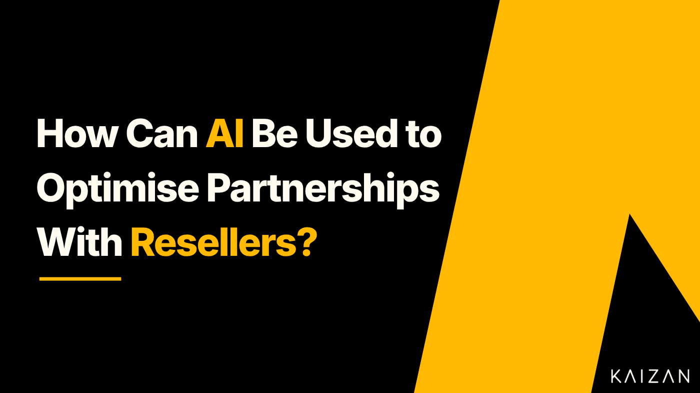

How can AI be used to optimise partnerships with Resellers?

In this article we’ll explore the value of reseller partnerships for businesses and the key benefits of working with a reseller. We’ll also discuss the ways in which to optimise a reseller partnership and how AI can be leveraged to extract maximum value.****
What is a Reseller Partnership?
A reseller partnership is a business relationship between a service provider and another company, known as a reseller or channel partner, where the reseller sells the service provider’s products or services to end customers. The reseller acts as an intermediary between the service provider and the customer, facilitating the distribution and sales process.
In a reseller partnership, the service provider typically develops and produces the products or services, while the reseller focuses on marketing, selling, and providing customer support. The reseller may operate in various capacities, such as a retailer, distributor, value-added reseller (VAR), or system integrator.
Reseller partnerships can take different forms, such as formal contractual agreements or informal arrangements. The terms and conditions of the partnership may include pricing structures, profit margins, sales targets, marketing support, training programs, and any exclusivity or territory restrictions.
Overall, reseller partnerships provide a means for the service provider to expand their market reach, increase sales, and focus on product development, while resellers benefit from offering a diverse portfolio of products or services and earning a profit through sales.
How can a business benefit from a Reseller Partnership?
Reseller partnerships offer businesses the opportunity to expand their market reach, access expertise and resources, enter new markets more efficiently, accelerate time to market, focus on core competencies, and enhance brand awareness. These benefits make reseller partnerships a valuable strategic option for businesses aiming to grow and establish a presence in new markets. Let’s explore these in more detail:
Increased Market Reach
Reseller partnerships allow businesses to tap into new markets and reach a wider client base. By leveraging the reseller’s existing distribution channels, client relationships, and market presence, a business can quickly expand its reach without having to establish its own infrastructure in different regions or industries.
Access to Expertise and Resources
Resellers often have extensive knowledge and experience in their respective markets. They understand the local dynamics, client preferences, and industry trends, which can be invaluable for a business seeking to enter or expand within a specific market. Additionally, resellers may possess resources such as sales teams, technical expertise, or marketing capabilities that can complement and enhance a business’s own capabilities.
Cost-Effective Market Entry
Rather than investing significant resources in building a new sales network, establishing distribution channels, or hiring local teams, a business can leverage a reseller’s infrastructure and expertise. This allows for a more cost-effective and efficient market entry strategy, as the business can piggyback on the reseller’s existing operations and benefit from their established relationships.
Faster Time to Market
Collaborating with resellers enables a business to accelerate its time to market. Instead of starting from scratch and navigating the complexities of a new market, a business can leverage the reseller’s established presence and relationships to quickly introduce and promote its products or services. This speed-to-market advantage can be crucial in competitive industries or when launching time-sensitive products.
Focus on Core Competencies
By partnering with resellers, a business can offload certain functions and focus on its core competencies. The reseller can handle activities such as sales, distribution, client support, and after-sales service, allowing the business to concentrate on product development, innovation, or other strategic priorities. This division of labor can lead to increased efficiency and effectiveness.
Building Brand Awareness
Resellers often have established brands and customer trust in their respective markets. By aligning with reputable resellers, a business can leverage their brand equity and tap into their customer base. This can significantly boost brand awareness and credibility for the business, particularly if the reseller has a strong market presence or is well-regarded in the industry.
What are the drawbacks of working with a Reseller?
Whilst reseller partnerships can provide business with a number of benefits, there are also some drawbacks or considerations to keep in mind. Here are some of the common ones:
**Loss of Control:**When you work with resellers, you give up a certain level of control over how your product or service is marketed, sold, and supported. Resellers may have their own strategies and priorities that may not align perfectly with your business objectives. This loss of control can impact your brand image and customer experience.
Margin Compression: Resellers typically buy products or services at a discounted rate and then resell them at a higher price to make a profit. This can result in margin compression for your business, as you may have to offer lower prices to resellers, reducing your profit margins. Finding the right balance between competitive pricing for resellers and maintaining healthy margins for your business can be challenging.
Channel Conflict:Channel partner conflict can arise when multiple resellers are operating in the same market, potentially competing against each other or even against your own direct sales channels. This conflict can lead to issues such as price undercutting, customer confusion, and strained relationships with resellers.
Quality Control: Maintaining consistent quality across different resellers can be a challenge. Resellers may not have the same level of expertise, knowledge, or commitment to customer service as your own team. Inconsistent customer experiences due to variations in service quality can harm your reputation and brand.
**Dependency on Resellers:**Your business may become reliant on resellers to reach certain markets or customer segments. If a reseller decides to discontinue or reduce their partnership with you, it can have a significant impact on your sales and market presence. Over-dependency on resellers can limit your ability to directly engage with customers and gather market insights.
Communication and Alignment: Ensuring effective communication and alignment with resellers can be challenging, especially if you have a large network of partners. Different resellers may have varying levels of engagement, commitment, and understanding of your products or services. Miscommunication or misalignment can lead to missed sales opportunities and confusion among customers.
Brand Dilution: The actions and reputation of your resellers can directly impact your brand. If a reseller engages in unethical practices or provides poor customer service, it can reflect negatively on your business. Maintaining brand consistency and ensuring that resellers represent your brand accurately and positively requires ongoing monitoring and support.
**Competitive Concerns:**When you work with resellers, you may provide them with insights into your product roadmap, marketing strategies, and customer data. This information can be valuable to resellers, but it also poses the risk of giving your competitors indirect access to your business strategies, potentially eroding your competitive advantage.
How can you mitigate the risks of working with a Reseller?
Mitigating the risks associated with working with a reseller requires careful planning, effective communication, and ongoing monitoring. Here are some strategies to mitigate these risks:
Select Reliable and Compatible Resellers: Thoroughly evaluate potential resellers before entering into a partnership. Consider their reputation, experience, financial stability, and alignment with your business values. Look for resellers with a proven track record, a strong customer base, and a good understanding of your industry.
Clear Expectations and Guidelines: Establish clear expectations, guidelines, and performance criteria in a formal agreement or contract. Define the responsibilities of both parties, including sales targets, marketing efforts, customer support standards, and compliance requirements. Clearly outline pricing structures, profit margins, and any exclusivity or territory restrictions to avoid conflicts.
**Training and Support:**Provide comprehensive training programs and ongoing support to resellers to ensure they have a thorough understanding of your products or services. Offer training on product features, benefits, competitive differentiators, and effective selling techniques. Regularly update resellers on new product releases or updates.
**Effective Communication Channels:**Establish open and frequent communication channels with resellers. Encourage regular feedback, address concerns promptly, and provide timely updates on product developments, pricing changes, and marketing campaigns. Maintain a strong relationship based on trust and transparency.
Leverage AI: AI can be deployed in various ways to optimise the relationship with a reseller and to mitigate some of the challenges of working with resellers. We’ll explore these in more detail below.
How can AI be leveraged when working with a reseller?
Businesses are increasing their use of AI across day-to-day operations to increase efficiency, save time and reduce costs. According to the Forbes Advisor survey, companies are using AI across a number of core business functions, with 30% using it to improve supply chain operations.
Let’s take a look at some of the ways in which AI can be utilised when working with resellers:
Performance Monitoring and Alerts
AI algorithms developed in technologies such as Kaizan can monitor reseller performance metrics in real-time, automatically identify deviations from predefined targets or benchmarks, and send alerts or notifications to relevant stakeholders. This enables proactive monitoring and timely intervention to address performance issues, maintain compliance, and ensure that resellers are meeting their obligations.
Automated Communication and Collaboration
AI-powered chatbots or virtual assistants can be used to facilitate communication and collaboration with resellers. These intelligent systems can provide quick responses to common queries, offer product information, assist with order processing, and provide timely updates on product releases or marketing campaigns. AI-driven communication tools can streamline interactions, reduce response times, and enhance the overall reseller experience.
Sentiment Analysis and Brand Monitoring
AI algorithms can analyse social media feeds, online reviews, and customer feedback to perform sentiment analysis and monitor the perception of your brand as represented by resellers. By tracking brand mentions, sentiment trends, and customer satisfaction levels, AI can help identify and address any negative brand experiences, reputation risks, or quality control issues associated with reseller activities.
Personalised Training and Support
AI-powered training platforms can deliver personalised training content to resellers based on their specific needs and performance gaps. By analysing reseller performance data, AI can identify areas where additional training or support is required and deliver tailored learning resources or recommendations. This helps improve resellers’ product knowledge, selling techniques, and customer service capabilities.
AI and Human input to Optimise the Process
It’s important to note that while AI can be valuable tool in mitigating challenges, human oversight and decision-making remain crucial. AI should be seen as a supportive tool that complements human expertise and judgment in managing reseller partnerships effectively.
In summary, reseller partnerships bring increased market reach, access to expertise, cost effective market entry, and brand expansion to service providers. These benefits make reseller partnerships a strategic and effective approach to expanding market presence and driving business growth. Whilst there are a number of considerations when working with resellers, AI powered technology can be used to optimise the partnership with resellers and to create a mutually beneficial relationship for both parties.